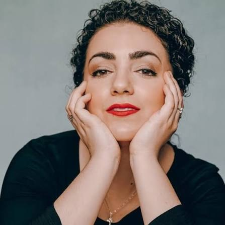
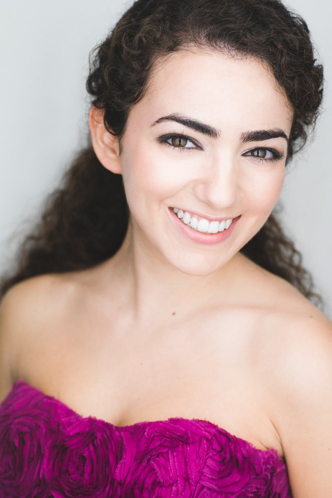
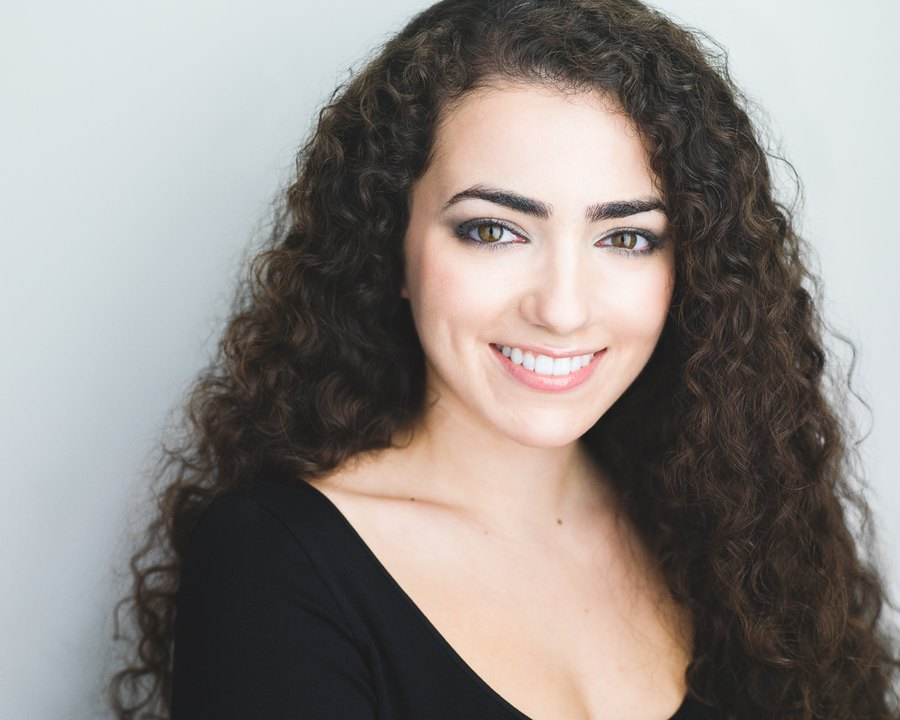

Director of Music
Holy Innocents Church
Neptune, NJ
She sings opera and directs sacred music, plays five instruments and teaches a sixth, and builds her concerts on a single conviction — that beauty is the surest road back to God.

A soprano and multi-instrumentalist from Colts Neck, New Jersey, she trained at the Manhattan School of Music — a bachelor's, a master's, and, this spring, a Doctor of Musical Arts — studying voice with the celebrated soprano Catherine Malfitano. Three times the Metropolitan Opera's Laffont Competition named her an Encouragement Award winner, and she has sung as a soloist at Carnegie Hall, Avery Fisher Hall, and in churches from Manhattan to Québec.
But her work has found its center in the sanctuary. As music director of the Higher Word Orchestra and director of music for parishes and schools across New Jersey, she has made the Church's via pulchritudinis — the way of beauty — the organizing idea of a life in music.
After a Latin Mass she directed on the feast of Saint Hildegard, a parishioner told her he had never, until that evening, been able to quiet his mind enough to truly pray.As told to the National Catholic Register, 2025


Her dissertation asks a practical question hidden inside a beautiful one: which sacred solos most truly belong in the Mass — where music is not performance, but prayer.
From coloratura ingénues to trouser parts, across grand opera, operetta, and the American musical.
| Gilda | Rigoletto | Footlight Players |
| Maria | West Side Story | Phoenix Productions |
| Papagena | The Magic Flute | Manhattan School of Music |
| Flora | The Turn of the Screw | Manhattan School of Music |
| Philomèle | Le roi l'a dit | Manhattan School of Music |
| Concepción | Juana | dell'Arte Opera |
| Oscar | Un Ballo in Maschera | Amore Opera |
| Emmie | Albert Herring | Opera in the Ozarks |
| Euridice | Orpheus in the Underworld | Concordia Vocal Academy |

As music director and chorus conductor of the Higher Word Orchestra — Manhattan's ~60-voice Catholic ensemble — Christa builds concerts that turn beauty into prayer at the Basilica of St. Patrick's Old Cathedral, St. Agnes, and St. Anthony of Padua. With Arthouse2B she has served as music director and harpist, from Karol Wojtyła's The Jeweler's Shop to the immersive Ruah: Breath of Life.
A working week spent leading sacred music across New Jersey and New York — and teaching the voices and hands that will carry it on.
Christa teaches privately in classical and sacred technique, for students just beginning and students preparing to go pro — in voice and six instruments.


Christa welcomes inquiries for performances, sacred-music direction, collaborations, and private study. She would be glad to hear from you.